← Back to Projects
01 • Residential + Courtyard
Andalus Courtyard Residences
A contemporary residential sanctuary inspired by Andalusian heritage, where shaded courtyards, layered privacy, reflective water, natural stone, warm timber and bronze screens create a calm, timeless community experience.
COURTYARD AS VALUE
Design Narrative
A courtyard is not the space left between homes. It is the idea that organizes how the community lives.
The project turns the courtyard into a development engine: a place where privacy, social connection, climate comfort and brand identity are not separate decisions, but one spatial strategy.
Modern Andalusian identity through shade, water, crafted materials and layered thresholds.
Shaded courtyardsLayered privacyWater + landscapeCrafted limestone, timber and bronzeArrival sequenceNight identity
Strategic Lens — Courtyard Value
How can Andalusian spatial memory become contemporary residential value without becoming imitation?
Use the courtyard as social heart, climate moderator and identity system.
Layered thresholds, shaded courts, reflective water and crafted materials turn heritage memory into contemporary family living.
Arrival → threshold → courtyard → home: every transition adds calm, shade and privacy.
Distinctiveness comes from lived spatial memory, not ornament applied at the end.
Curated Visual Gallery
Andalus Courtyard Residences
A visual sequence of architecture, atmosphere, movement and detail.
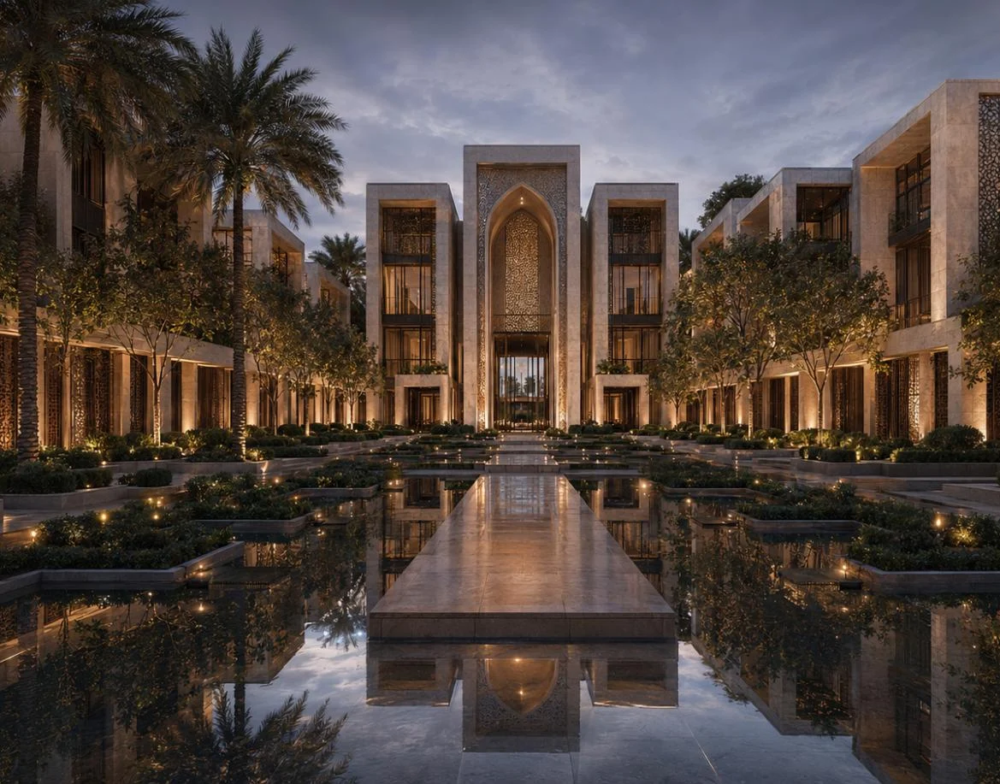
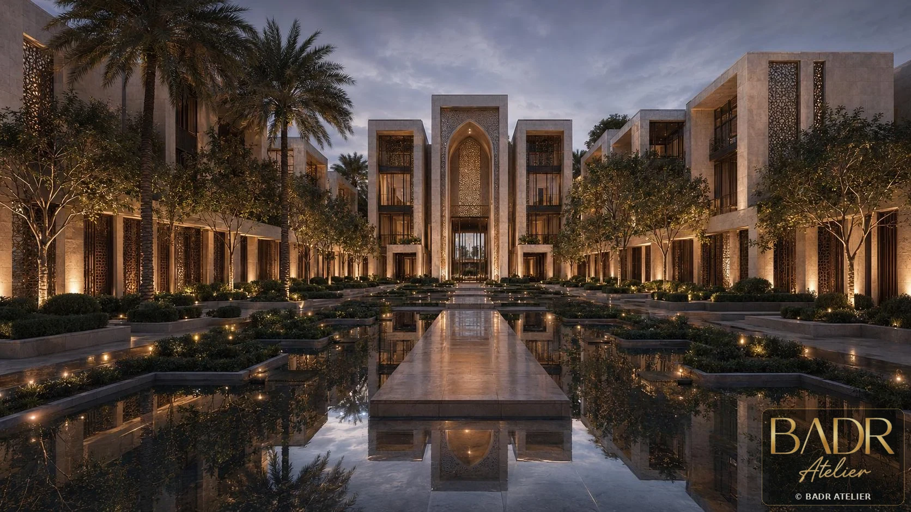
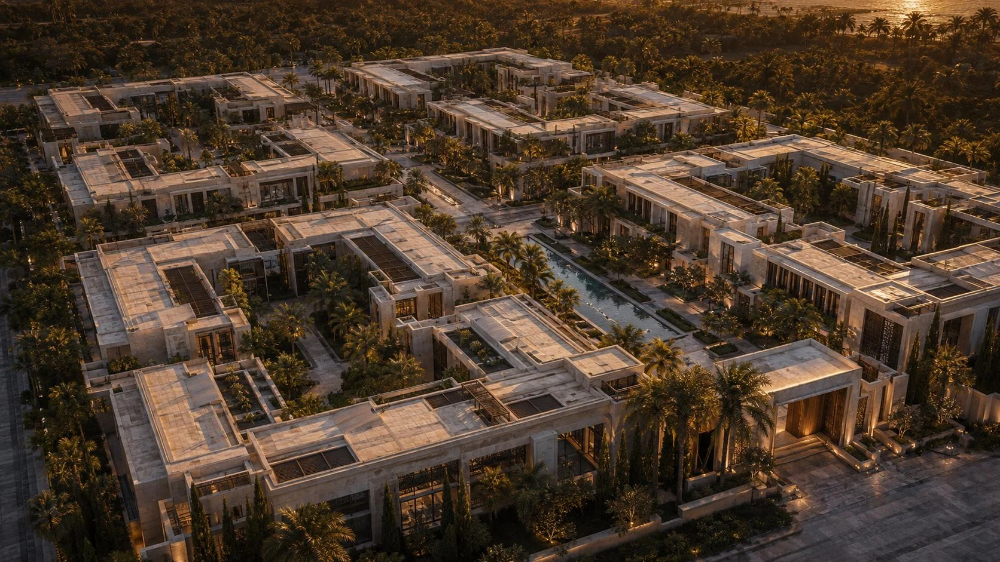
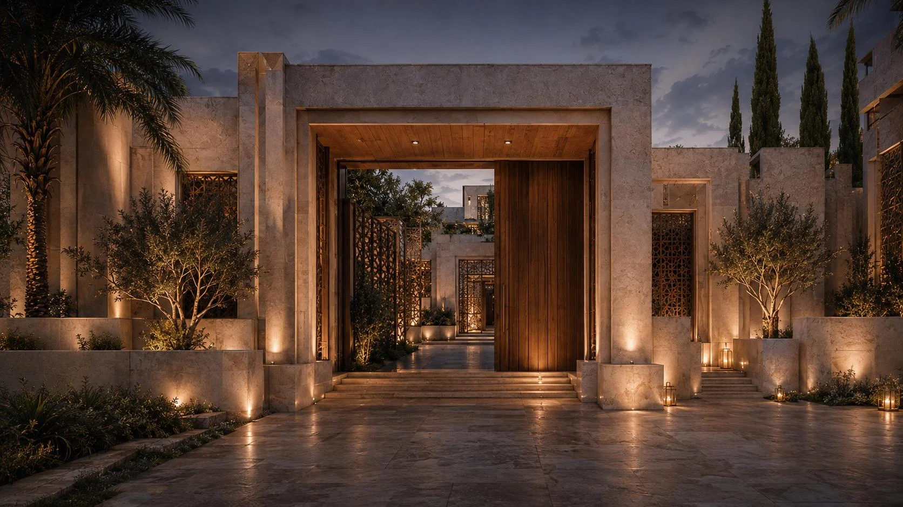
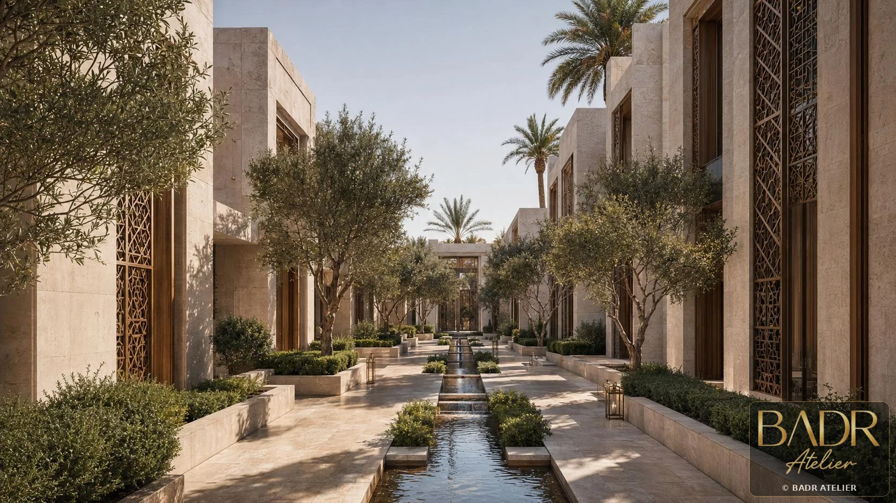
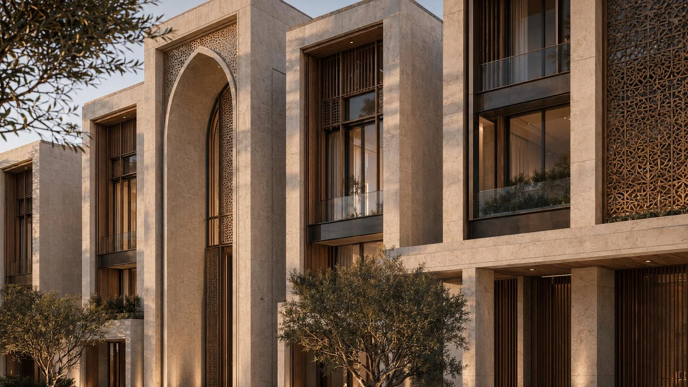
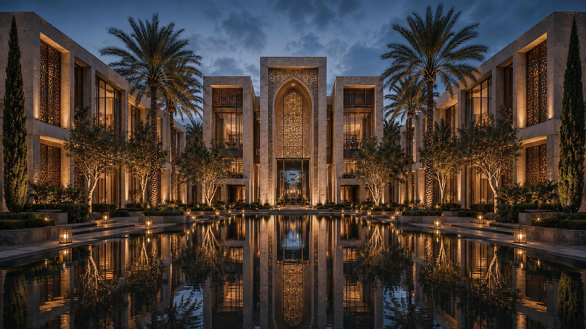
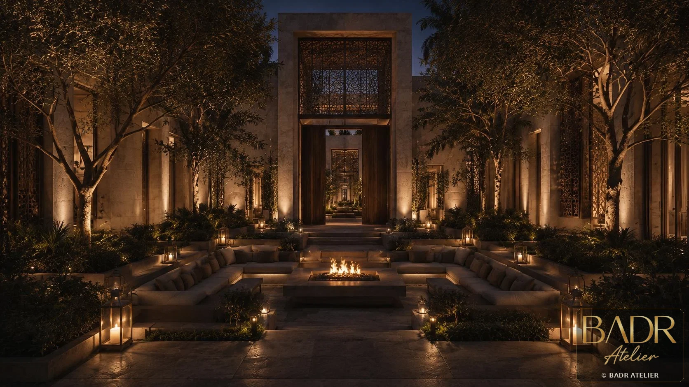
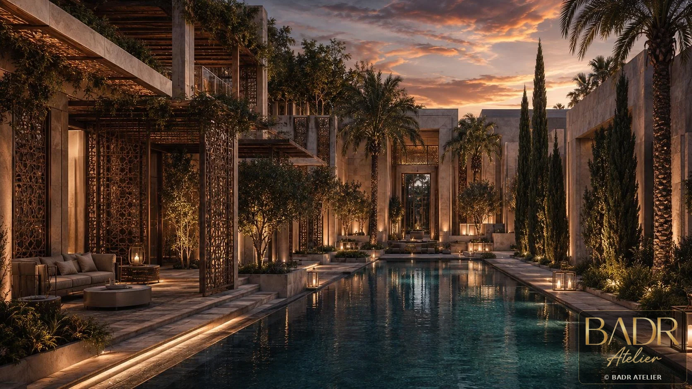
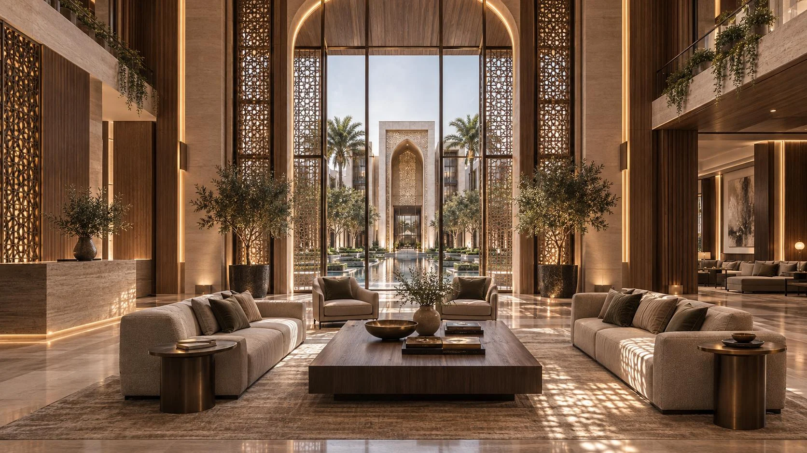
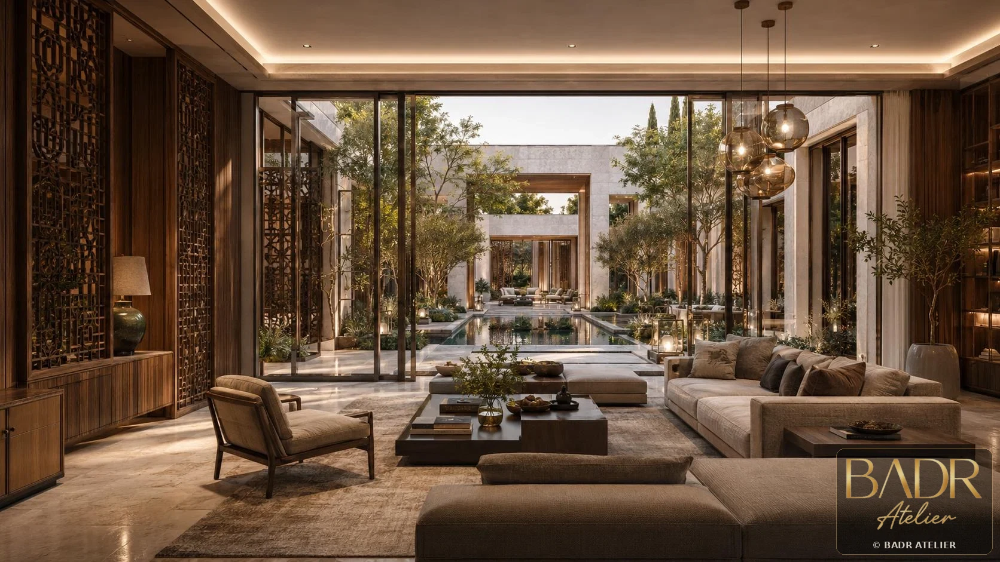
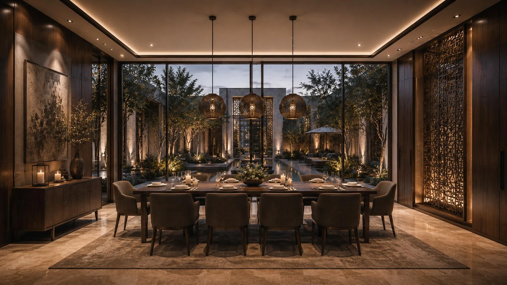
Key Features
- Shaded courtyards
- Layered privacy
- Water + landscape
- Crafted limestone, timber and bronze
- Arrival sequence
- Night identity
Spaces + Experiences
- Arrival court
- Residential courtyards
- Private terraces
- Interior living spaces
- Landscape buffers
- Water courts